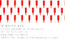

La Ferme de La Godinière
27410 Le Noyer en Ouche
Nos Bonnes Adresses
La nouvelle adresse de notre site : http://pagesperso-orange.fr/lagodiniere27/
|
|
PARIS 75005 |
 |
|
Retour Accueil ou Plan du site ou page précédente |
Écrivez nous pour donner votre impression et votre suggestion, merci.
Ma messagerie est protégée par Avast
Conception et Réalisation : René Lesur
info légale : l'abus d'alcool peut
nuire à la santé, consommer avec modération.